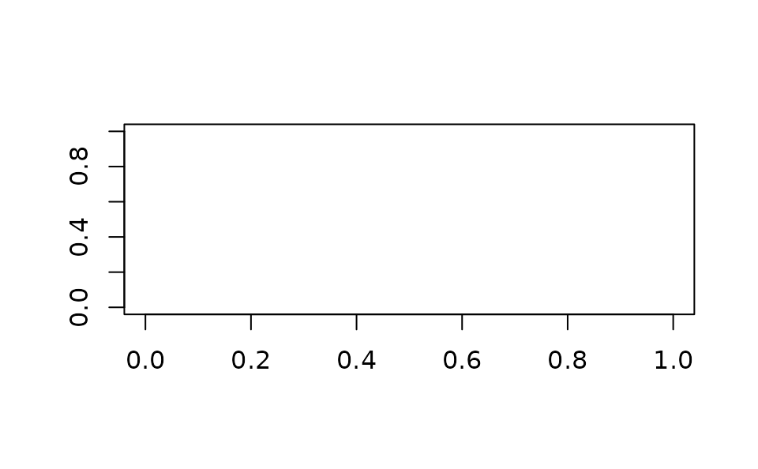

rgl.pixels.RdThis function extracts single components of the pixel information from the topmost window.
The possible components are "red", "green", "blue",
"alpha", "depth", and "luminance" (the sum of the three
colors). All are scaled from 0 to 1.
Note that the luminance is kept below 1 by truncating the sum; this is the
definition used for the GL_LUMINANCE component in OpenGL.
A vector, matrix or array containing the desired components. If one component is requested, a vector or matrix will be returned depending on the size of block requested (length 1 dimensions are dropped); if more, an array, whose last dimension is the list of components.
rgl.snapshot to write a copy to a file,
demo("stereo") for functions that make use of this to draw
a random dot stereogram and an anaglyph.
example(surface3d)
#>
#> srfc3d> #
#> srfc3d> # volcano example taken from "persp"
#> srfc3d> #
#> srfc3d>
#> srfc3d> z <- 2 * volcano # Exaggerate the relief
#>
#> srfc3d> x <- 10 * (1:nrow(z)) # 10 meter spacing (S to N)
#>
#> srfc3d> y <- 10 * (1:ncol(z)) # 10 meter spacing (E to W)
#>
#> srfc3d> zlim <- range(z)
#>
#> srfc3d> zlen <- zlim[2] - zlim[1] + 1
#>
#> srfc3d> colorlut <- terrain.colors(zlen) # height color lookup table
#>
#> srfc3d> col <- colorlut[ z - zlim[1] + 1 ] # assign colors to heights for each point
#>
#> srfc3d> open3d()
#> null
#> 120
#>
#> srfc3d> surface3d(x, y, z, color = col, back = "lines")
depth <- rgl.pixels(component = "depth")
#> Warning: Error reading component 'depth'
if (length(depth) && is.matrix(depth)) # Protect against empty or single pixel windows
contour(depth)
